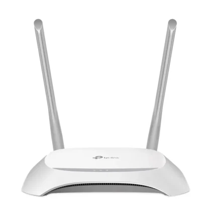
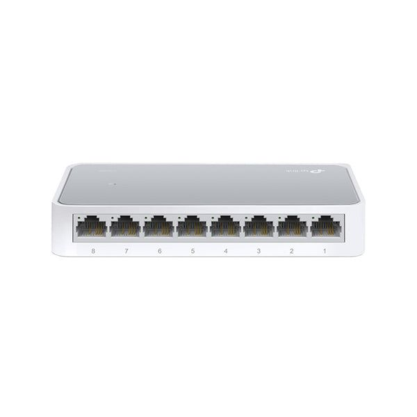
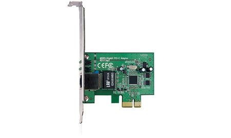

Sebagaimana yang kita telah ketahui bahwa perangkat komputer memiliki beberapa jaringan agar komputer dapat terhubung dengan jaringan internet.
nah pada kali ini saya akan menjelaskan bagaimana sebuah komputer dapat beroperasi atau berfungsi pada perangkat jaringam pendukung seperti switch,router,hun,card,lan dan sebagainya.
Jadi apa itu perangkat jaringan komputer?
Perangkat jaringan komputer adalah
suatu perangkat atau alat pendukung yang berfungsi untuk menjalankan transformasi atau pengiriman data sehingga pada perangkat yang bersangkutan dapat beroperasi.
Biasanya sebuah komputer yang digunakan perlu beberapa alat untuk pengiriman data seperti : router,wireles card,lan card dan masih banyak lagi jenis nya.
Sebagaimana dengan fungsi perangkat jaringan keras alat alat seperti router atau switch itu dia akan bekerja sesuai kegunaannya yaitu mengirimkan suatu data kepada perangkat lain sehingga terbentuklah sebuah jaringan komputer.
Berikut ini macam macam alat jaringan komputer yang sering kita temui dan memiliki harga yang cukup terjangkau namun biasanya ada harga ada kualitas.
Contoh Peralatan Jaringan Komputer
Seperti apa si perangkat jaringan komputer yang dimaksud itu?
yuk kita lihat macam-macam perangkat jaringan komputer dibawah ini.
1. Router

Contoh Router
Router adalah
sebuah perangkat atau alat yang berfungsi untuk mentransmisikan paket data dari jaringan internet ke perangkat lain melalu proses routing.Proses routing sendiri adalah proses meneruskan suatu paket jaringan satu dengan lainnya.
Contoh pada proses routing pada perangkat router adalah : ketika kita mau menonton youtube di internet pastinya kita akan mengkoneksikan perangkat komputer atau smarthphone kita ke dalam jaringan wifi nah pada saat kita sudah terkoneksi oleh wifi tersebut ada proses pertukaran data melalui proses routing pada perangkat router.
Adapun dalam arti lain router sendiri adalah sebuah perangkat jaringan yang berfungsi sebagai perangkat yang mengelola lalu lintas (Traffic) sebuah jaringan dengan meneruskan suatu data ke alamat IP yang dituju.Nantinya pada perangkat yang dituju akan bisa menggunakan internet pada jaringan yang sama.
Apa si fungsi router?
Router memiliki 2 fungsi utama yaitu mengelola lalulintas jaringan dan membagikan koneksi internet ke beberapa koneksi lain.
selain fungsi tersebut ternyata router memiliki fungsi lain diantaranya :
A. Menghubungkan jaringan ke DSL
Salah satu fungsi router adalah menghubungkan jaringan lokal ke DSL (Digital Subscriber Line). Biasanya DSL berguna sebagai firewall yang digunakan untuk mencegah adanya
broadcast storm, memblokir data yang mencurigakan dan mengatur lalu lintas.
B. Membaca alamat IP
Router dapat membaca alamat Ip yang bertujuan untuk membaca tujuan dari suatu node ke node lainnya dalam sebuah jaringan
ya anggap aja alamat Ip pada komputer itu adalah sebuah alamat rumah dan router itu seperti kang paket yang mengantarkan paket ke alamat alamat rumah yang sudah tertera pada paketnya.
C. Menyaring paket data
Proses filterasi pada router berfungsi untuk memfilter lalu lintas (Traffic) jika dalam suatu jaringan terdeteksi lalu lintasnya sedang penuh, mungkin kalo kita akrab nya disebut macet maka tugas filterasi pada router adalah mencari lalu lintas yang tidak terlalu ramai agar performa jaringan internet tetap stabil.
D. Menghubungkan jaringan
Pada fungsi utamanya router berfungsi untuk menghubungkan perangkat ke dalam jaringan internet.
Proses ini berlangsung dengan adanya distribusi alamat Ip ke setiap perangkat dalam jaringan tertentu.
2. Switch

Contoh Switch 8 Port
Switch adalah
sebuah perangkat jaringan yang berfungsi untuk mengubungkan ke beberapa perangkat komputer dalam sebuah jaringan.
Pada proses ini memungkinkan akan terjadi suatu proses pertukaran data secara searah sehingga dapat diterima tanpa adanya gangguan.
ada pendapat lain yang mengatakan bahwa switch digunakan sebagai untuk menghubungkan beberapa Hub untuk membentuk jaringan yang lebih besar serta membutuhkan bandwidth yang lebih besar pula.
Tujuan menggunakan switch
Adapun tujuan menggunakan switch diantaranya :
1. Mengurangi beban kerja di masing-masing PC Host
2. Membantu meningkatkan kinerja pada jaringan
3. dapat dihubungkan langsung dengan workstation.
Fungsi switch
Berikut fungsi peran switch pada jaringan komputer :
1. Menyaring dan meneruskan paket data
Fungsi utama pada switch adalah menyaring dan meneruskan paket data yang dimana bertujuan untuk meminimalisir terjadinya tabrakan pada saat data di proses.
2. Mencatat alamat
Switch memiliki kemampuan untuk mempelajari perangkat yang terhubung ke perangkat switch, mempelajari proses pengiriman data dan mempelajari kemana dan arah mana data yang akan dikirimkan tersebut.
3. Looping avodiance
Fungsi lainnya pada switch adalah mencegah terjadinya looping data atau data yang berulang ulang. kendala ini merupakan kondisi yang terjadi dimana data yang diterima stuck atau hanya berputar putar dibagian port.
Pada kondisi tersebut switch akan memungkinkan penerusan pengiriman data dengan cara memblokir salah satu port yang sedang terhubung ke perangkat lain.
3. LAN Card

Contoh Lan Card
Lan card adalahperangkat keras yang berbentuk seperti kartu yang fungsi utamanya adalah menghubungkan dua atau lebih komputer /perangkat komputer agar dapat melakukan pertukaran data.
Perangkat ini dapat dihubungkan kedalam jaringan melalui alamt Mac address,dengan adanya perangkat ini komputer dapat terhubung dengan jaringan yang dituju.
Pada saat komputer akan melakukan proses pertukaran data dalam jaringan perlu menghubungkan terlebih dahulu kabel jaringan dengan Lan card yang port untuk menghubungkan kabel nya sudah tersedia. Jenis kabel yang dapat dihubungkan dengan lan card yaitu kabel Lan dengan konektor RJ45.
Fungsi LAN Card
Ini dia fungsi pada perangkat LAN Card diantaranya :
1. Mewujudkan koneksi fisik bagi masing-masing komputer
Keberadaan LAN Card dapat menyatukan semua komputer dalam satu jaringan tertentu.
Disaat yang sama keberadaan LAN Card berfungsi penghubung antara komputer dengan jaringan.
2. Menyediakan saluran data
LAN card tidak hanya berfungsi sebagai penghubung bagi komputer, tapi juga memberi tempat keluar atas aliran data antar komputer.
3. Dapat memonitor jaringan
LAN Card bukan hanya sebagai penghubung antara data dan jaringan, akan tetapi pada perangkat LAN Card memiliki fitur tersembunyi yaitu dapat memonitor jaringan atau lalu lintas pada jaringan.
Namun tidak semua LAN Card memiliki fungsi untuk memonitor jaringan hanya LAN Card tertentu yang dapat melihat lalu lintas pada jaringan
Pada fungsi ini pengguna yang menggunakan LAN Card tersebut dapat melihat isi pada data dan proses pertukaran data di dalam jaringan dan itu sangat merugikan pengguna lain nya yang terhubung pada jaringan yang sama
Selain itu pengguna yang memiliki LAN Card tersebut dapat melakukan Port scanning yang fungsinya untuk melihat Port mana yang terbuka dan tidak memiliki penjagaan yang ketat.
Nama : Sabil Abdul Aziz
Kelas : D3SI-46-02
Nim : 6701220018
Mata Kuliah : Arsitektur Jaringan Komputer